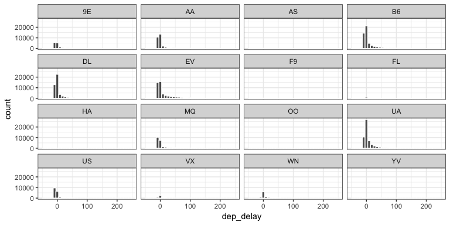
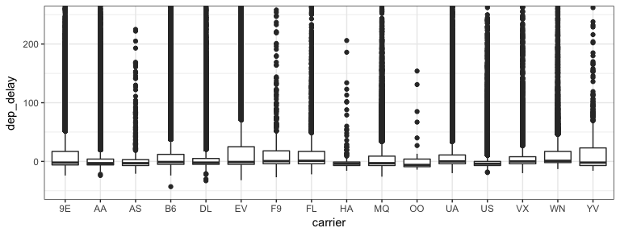
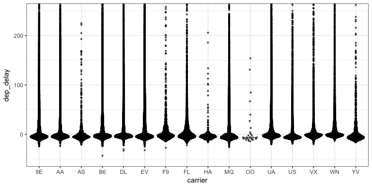
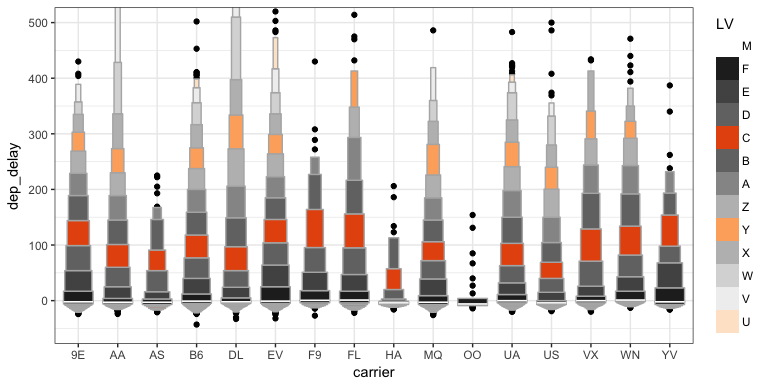
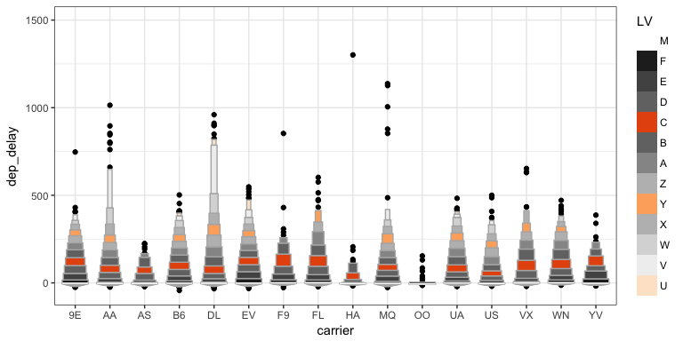

Using ggplot2
J. Hathaway
Becoming the Critic.
My Attempt at a graphic
Being Readings
How does data change belief?
To understand God’s thoughts we must study statistics, for these are the measure of His purpose.
-Florence Nightingale (Coxcomb graph)
{kind=link}
Her most famous graph, displayed at the top of this article, shows the number of soldier deaths per month from various causes. Each pie slice represents a different month, from April 1854 through March 1856, and each color stands for a different cause of death. It takes just a quick glance to achieve the two main takeaways: that disease, colored blue, killed far more soldiers than either “wounds” (red) or “other” (black), and that it was reduced greatly in 1855.
What changed Britian’s mind?
After she completed her report, Nightingale worked hard to turn its conclusions into common knowledge, privately distributing it to influential people and writing several more reports, many of which included coxcombs. When she received push back from Army doctors, who thought sanitary measures a waste of money, she even leaked some of her charts to the press.
Hans
It is only by measuring that we can cross the river of myths.
Team Discussion
Case Study 2: Wealth and Life Expectancy (Gapminder)
Case Study 3: Becoming a databender
Task 5: World Data Investigation
Virtual Questions and Support
- How is slack working?
- Threaded conversations
- Two channels for help?
- Stack Overflow vs Slack post
- Quick help vs detailed support
The Graphic Tool Set
The grammar of graphics
Cleveland’s Examples
There were three democratic candidates. We are going to use the following plots to help us understand the constituency that helped the winner in the primaries.
- 1984 Primaries
- Mondale, Hart, Jackson Visualization
- Better Mondale, Hart, Jackson Visualisation
- How much time do you think it took Bill Cleveland in th 80’s to make each graph?
Class Activity: Getting Started
#install.packages("nycflights13")
library(nycflights13)
fl_bp <- flights %>%
ggplot(aes(x = carrier, y = dep_delay))
fl_sc <- flights %>%
filter(dep_time > 800, dep_time < 900) %>%
ggplot(aes(x = dep_time, y = dep_delay))
fl_bp + geom_boxplot()
fl_sc + geom_point()Get the above code working. We will be tweaking it using ggplot for the next part.
Labelling the outside
Complete the following - Create clean labels for the x and y axes and zoom in on the y-axis from 50 to 100 minutes. Also have breaks every 15 minutes
- labelling - Axes, Titles, and Legends
- xy Scales -
scale_x_,scale_y,coord_- Setting breaks and changing labels or Transforming scale
Labelling the inside
Complete the following -
- Color the points of
fl_scbyoriginusing the brewer scale. - Color the points of
fl_scbyarr_delay**
- color & fill scales
scale_color_scale_fill_scale_gradient_
Putting the legend on the inside
Complete the following - 1) Color the points of fl_sc by origin using the brewer scale and use the directlabel package to move the labels into the plotting region.
library(directlabels)- http://directlabels.r-forge.r-project.org/examples.html
geom_dl()anddirect.label()
Changing the feel
Complete the following - Use a theme_() to create a different look for your graphic and change the orientiation of the x-axis test to 35 degrees
- Themes (check out
library(ggthemes)) ggsave()
Displaying distributions of multiple groups for decision making
Clarity vs. Complication
- What do we know after looking at this plot? How do we provide depth of variability understanding without overwhelming the visualization user?

Remember, data can get complicated very fast.
Distribution background
- violin plots
- beeswarm plots
- letter-value box-plots
- Another package that makes flipping the axes easier in ggplot – rotating axes
Histograms (1)
What don’t we like about this plot?

Histograms (2)
- What changed in this histogram?
- What don’t we like about this plot?

Boxplots
- What don’t we like about this plot?
- How hard is it to explain?

Violin plots
- What don’t we like about this plot?
- How hard is it to explain?

Beeswarm plots (1)
- What don’t we like about this plot?
- How hard is it to explain?

Beeswarm plots (1)
- What don’t we like about this plot?
- How hard is it to explain?

Letter-Value boxplots (1)
- What don’t we like about this plot?
- How hard is it to explain?

Letter-Value boxplots (2)
- What don’t we like about this plot?
- How hard is it to explain?

Letter-Value boxplots (3)
- What don’t we like about this plot?
- How hard is it to explain?
